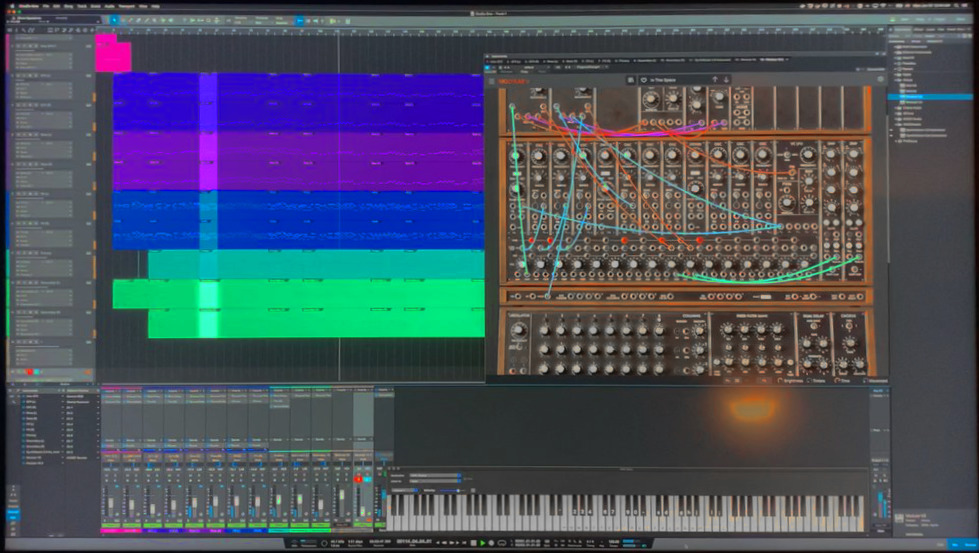

In a previous post regarding the video teaser for the Lambda Days 2021 conference, an ambient piece was used as the "score" for the video. It has now been published on soundcloud here:
14 tracks were used to create this:
- nine tracks created with undertone (using the Extempore backend) for the bulk of the song; these were connected to various sounds in nine different instances of SynthMaster 2.9 software synths (VST plugin)
- two tracks of SynthMaster 2.9 used for intro and outro
- two tracks of Arturia's Moog modular V (Moog System 55 emulation)) for intro and outro
- one FX send with Valhalla vintage reverb
Pictured below is an image (captured by phone) of the 60" living room screen being used for final production of the song.
